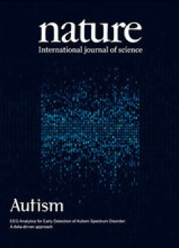
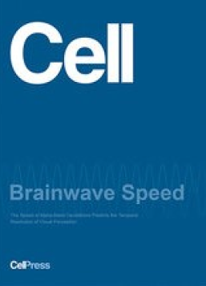

04.
EEG Support Documents
- 
Austin Publishing Group
The Potential of Magnetic Resonant Therapy in Children with Autism Spectrum Disorder
MeRT℠ may be a therapeutic option to pursue given EEG abnormalities in children with ASD.

Society for Brain Mapping & Therapeutics
Noninvasive EEG-EKG guided trans-magnetic stimulation at natural resonance frequency in children with autism: randomized double-blinded pilot study
MeRT℠ may impart EEG and clinical changes in children with ASD, with more research necessary at this time.
- 
CellPress
The Speed of Alpha-Band Oscillations Predicts the Temporal Resolution of Visual Perception
Brainwave speed and specific function relates to processing speed.